00 全文概览
这个晋升季，我同时承担了两个角色：作为Leader辅导团队成员冲击晋升，作为评委评审8份跨方向的晋升材料。两件事叠在一起，传统方式至少需要两周。AI全程参与后，穿插在日常工作中就搞定了。
| 维度 | 关键发现 | 数据支撑 |
|---|---|---|
| Leader辅导 | 5阶段全流程辅导，从诊断到模拟分析 | 材料诊断3分钟完成，传统方式半天 |
| 评委评审 | SABCD评级+横向校准排序 | 8份材料不到1小时，传统方式5+小时 |
| 底层能力 | 两条工作流共享职级标准库、评委视角等4项底层能力 | 能力沉淀后可复用，明年不用重来 |
| 本质区别 | "养AI"vs"用AI"——不是做得更快，是以前做不到的事现在能做了 | 答辩攻略、模拟分析从无到有 |
3个核心发现：(1) AI辅助辅导最大价值不是提速，而是让"答辩攻略"和"逐句模拟分析"从无到有；(2) 评审场景的核心收益是一致性——8份材料用同一套标准，消除"标准漂移"；(3) 两条工作流共享底层能力，这就是"养AI"和"用AI"的本质区别。
01 这个晋升季，我面前摆着两个"不可能任务"
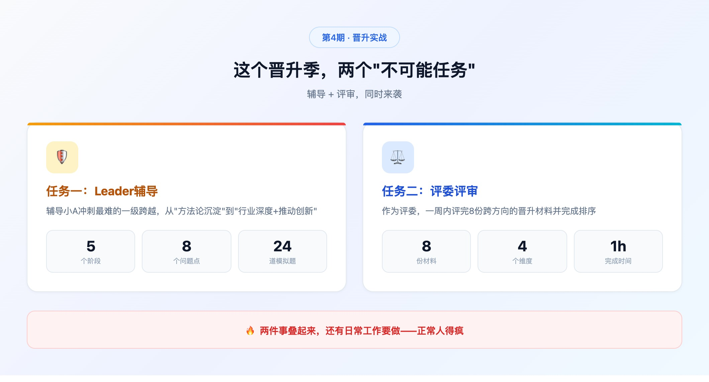
前3期我们做了三件事：理解"养AI"的思维方式、教它记住你、教它学技能。
今天开始进入实战——不是演示功能，是真刀真枪地干活。
先说个场景，如果你是技术leader，一定会心跳加速：
晋升季到了。
你有团队成员需要辅导——帮他整理材料、做PPT、准备答辩、模拟问答。与此同时，你自己也是评委——8份晋升材料堆在桌上，每份30页PPT、20分钟答辩，要在一周内全部评完。
辅导的活，传统做法至少一周——反复改材料、一版一版磨PPT、陪着练答辩。评审的活，每份材料认真看完需要40分钟，8份就是5个多小时。
两件事叠在一起，你还有日常工作要做。
这一期，我讲一个真实的故事：这个晋升季，我是怎么让AI全程参与的——从辅导团队成员冲击晋升，到作为评委评审8份材料，一整套工作流，AI跟着我走完了全程。
02 第一幕：作为Leader，我是怎么辅导小A的
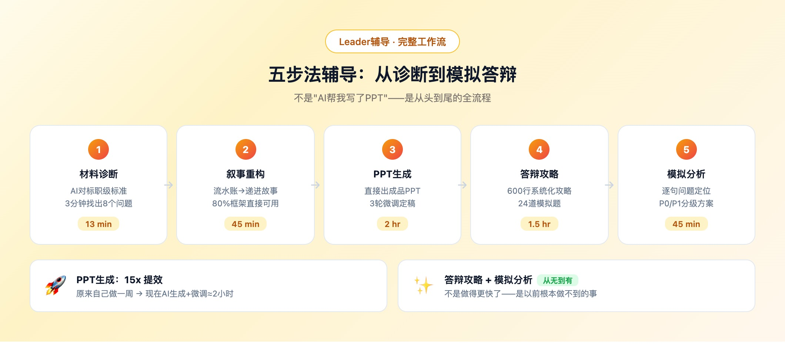
这一段是整篇文章的核心。不是"AI帮我写了PPT"这么简单的故事，是从头到尾的完整工作流。
2.1 第一步：材料诊断——3分钟找出8个问题
我把小A的所有原始材料丢给AI——初稿大纲、内部文档、项目数据。
我："分析一下这份晋升材料，对照目标职级标准，诊断有哪些问题。"
AI 3分钟内给出了诊断报告，列了8个核心问题：
| # | 问题 | 严重度 | 说明 |
|---|---|---|---|
| 1 | 缺少能力映射 | P0 | 全篇没有和目标职级要求的逐项对标 |
| 2 | 叙事松散 | P0 | 流水账式的工作汇报，缺少主线 |
| 3 | 领导力证据不足 | P0 | "带领他人"的体现很弱 |
| 4 | 方法论不显性 | P1 | 做了很多但没有提炼成方法论 |
| 5 | 行业对标缺失 | P1 | 没有和行业做法对比 |
| 6 | 未来规划太泛 | P1 | "继续深耕"不是规划 |
| 7 | 数据支撑弱 | P1 | 结论多、数据少 |
| 8 | AI创新未体现 | P2 | 2025年新增的AI能力要求完全没涉及 |
这就像你请了一个熟读所有职级文档的助手，帮你快速出体检报告。
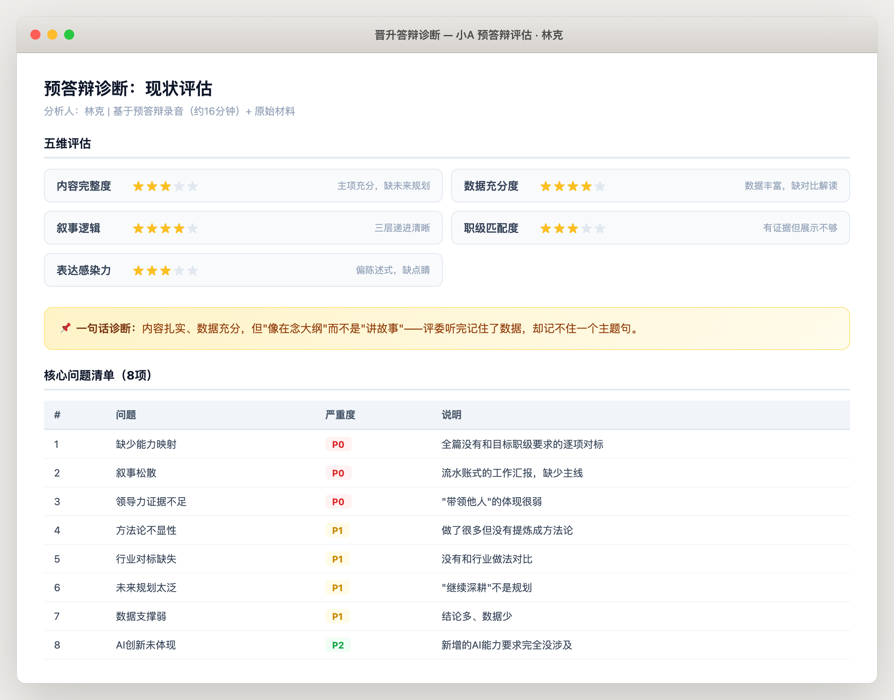
我花了10分钟确认和补充AI的诊断——调整了两个问题的优先级，补了一个AI没发现的问题（小A有一个行业获奖没提）。
诊断环节总耗时：AI 3分钟 + 我10分钟 = 13分钟。
2.2 第二步：叙事重构——把流水账变成故事
这是最关键的一步。同样的经历，换一种讲法，评委的感受完全不同。
我："小A的核心优势是在某个技术方向从0到1建立了体系，现在目标职级最看重行业深度和创新推动力。帮我找一条主线，把三个项目串起来。"
AI给的重构方案：
之前的结构（流水账）：
项目A → 项目B → 项目C → 未来计划
重构后的结构（递进式叙事）：
发现痛点 → 创新解决 → 方法论沉淀 → 团队和行业影响 → 更大愿景
更关键的是，AI把三个项目重新定位成了递进关系：
- 项目A = 发现问题的起点
- 项目B = 系统性解决方案
- 项目C = 推广到更大范围
合在一起讲的是一个"从0到1到N"的完整故事——不再是"我做了三个项目"，而是"我如何一步步把一个领域做深做透"。
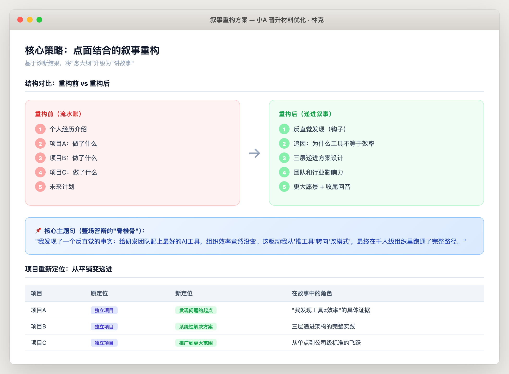
这个方案我做了大约30%的调整——有些关于行业影响的表述需要更精准，AI没有足够的行业上下文。但80%的框架是直接可用的。
叙事重构耗时：AI 15分钟 + 我30分钟调整 = 45分钟。
2.3 第三步：自动生成PPT——不是写大纲，是直接出成品
我："按晋升PPT标准模板，根据重构后的材料生成完整PPT。"
AI直接输出了一个完整的PPT文件——不是文字大纲，是打开就能看的成品PPT。20多页，还贴心地出了两个版本风格供选择。
小A看了之后的反应："这比我自己改一周的效果都好……"
当然，第一版不是完美的——有两页布局出现了数据重叠，有一张图表需要换成更直观的展示方式，少数表述需要更口语化。
但修改方式很简单——我指出具体位置，AI精确修改那几页，不用全部重来。经过3轮微调，最终版成型。
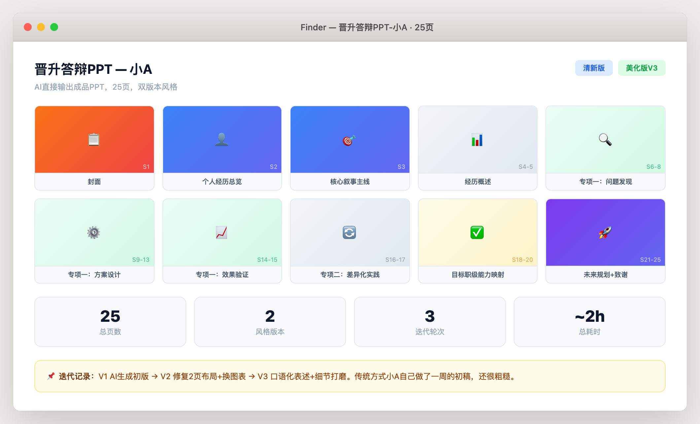
PPT生成耗时：AI生成 + 3轮微调 = 约2小时。
传统方式呢？小A自己做了一周的PPT初稿，还很粗糙。
2.4 第四步：答辩攻略——比你的师兄更了解评委
我："根据小A的材料和目标职级标准，生成一份完整的答辩攻略。"
AI输出了一份将近600行的答辩攻略，分5个部分：
| 部分 | 内容 | 亮点 |
|---|---|---|
| 核心策略 | 一句话诊断 + 核心叙事 + 时间分配 | 开场30秒必说的3句话 |
| 逐页攻略 | 25页PPT，每页标注讲法、时间和评委心理 | "这页评委心里在想什么" |
| 评委问答 | 24道模拟题，覆盖8个维度 | 每题附推荐话术+要避免的坑 |
| 连环追问 | 3个追问场景，每个连续追3层 | 模拟评委穷追不舍的情况 |
| 速查清单 | 核心数据、关键停顿点、收尾回音句 | 答辩前5分钟快速复习 |
举个连环追问的例子：
评委："这个项目的核心指标提升了多少？"
评委追问："这些提升里，你个人贡献占多少？"
评委再追问："如果换一个更资深的人来做，结果会不会一样？"
每一层追问都配了推荐话术和"别踩的坑"——比如第三问最忌讳说"应该差不多"，正确答案应该强调自己的不可替代性。
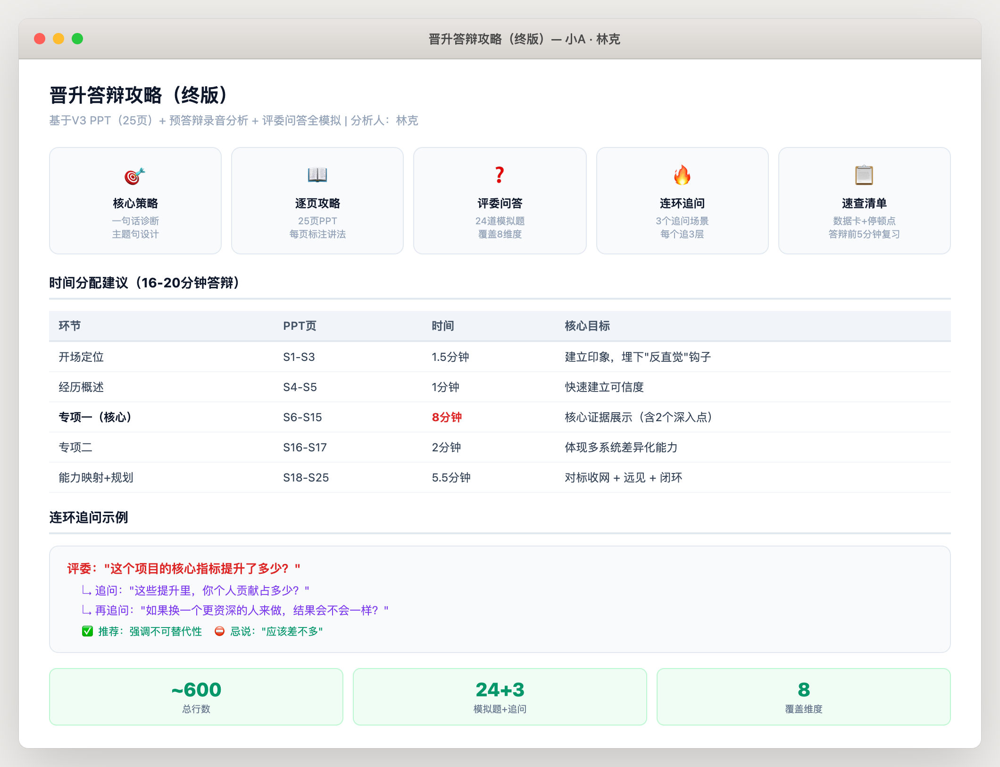
答辩攻略耗时：AI生成20分钟 + 我审阅调整1小时 = 约1.5小时。
2.5 第五步：模拟答辩分析——逐句找问题
小A做了一次完整的模拟答辩，我让他录了音。
我："分析这份模拟答辩的录音转录，找出表现中的问题，按P0/P1分级。"
3个P0级问题（必须修复）：
| 问题 | 具体表现 | 改进方案 |
|---|---|---|
| 开场缺失叙事主线 | 前2分钟在介绍背景，没有建立核心故事线 | 重写开场白，前30秒说出主线 |
| 数据回答不自信 | 被问具体数据时停顿过长、语气不确定 | 准备数据速查卡，关键数据脱口而出 |
| 追问时偏离主题 | 被连续追问时容易扯到不相关的内容 | 练习"追问 → 回到主线"的话术模板 |
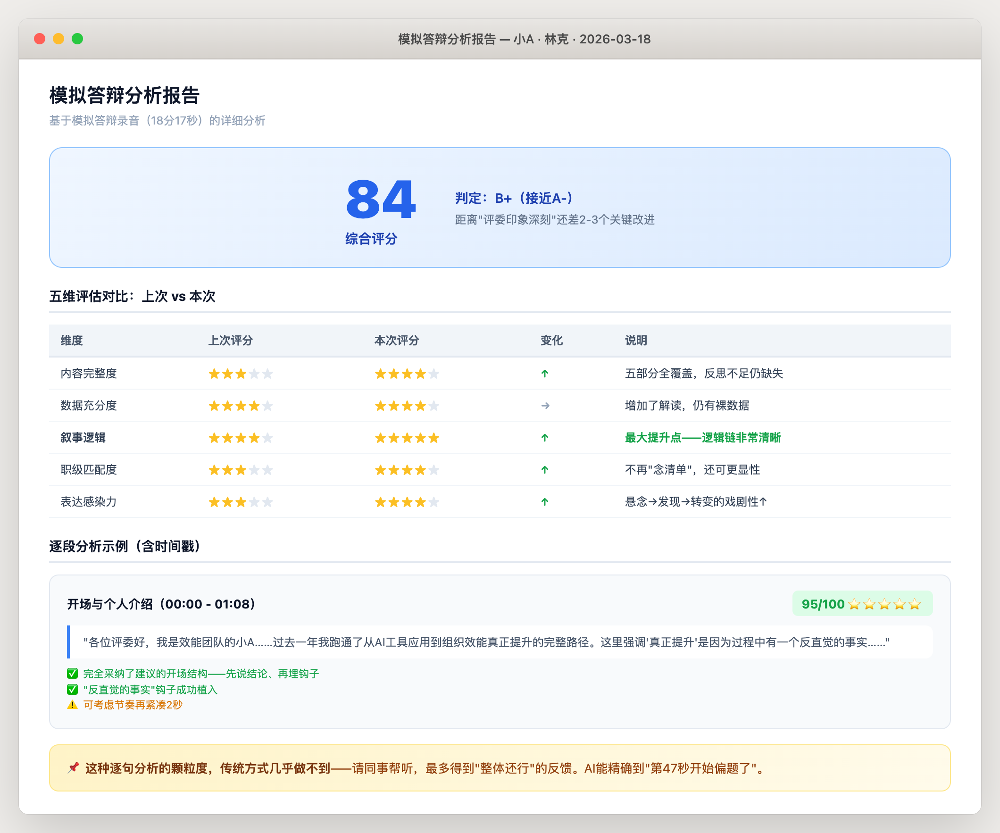
小A按这套方案调整后又练了两遍，正式答辩前信心满满。
模拟分析耗时：AI分析15分钟 + 我确认补充30分钟 = 45分钟。
2.6 辅导全流程复盘
| 步骤 | 传统方式 | AI辅助方式 | 提效比 |
|---|---|---|---|
| 材料诊断 | 半天对照文档 | 3分钟自动对标 | 20x |
| 叙事重构 | 多次讨论迭代 | 15分钟出框架+30分钟调整 | 5x |
| PPT生成 | 自己做一周 | AI生成+3轮微调≈2小时 | 15x |
| 答辩攻略 | 靠经验临场发挥 | 600行系统化攻略 | 从无到有 |
| 模拟分析 | "整体还行"的笼统反馈 | 逐句分析+P0/P1分级 | 从无到有 |
03 第二幕：作为评委，1小时评完8份材料
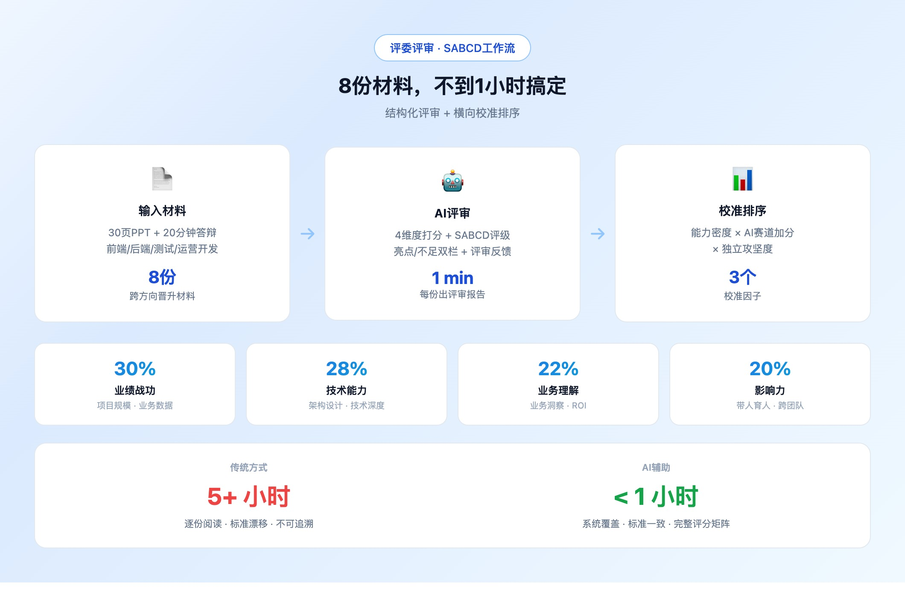
辅导完小A，我还得戴上另一顶帽子——晋升评委。
8份材料、涵盖前端/后端/测试/运营开发等不同方向。传统做法：逐份阅读打分，一份40分钟，8份5个多小时。
这次我换了一种方式。
3.1 一份材料，1分钟出评审报告
我："分析这份晋升PPT，生成SABCD评审报告。"
AI在1分钟内输出了一份结构化的评审报告，包含4个维度：
| 维度 | 权重 | 评估内容 |
|---|---|---|
| 业绩战功 | 30% | 项目规模、业务数据、技术突破 |
| 技术能力 | 28% | 架构设计、技术深度、复杂问题解决 |
| 业务理解 | 22% | 业务洞察、方案选型合理性、ROI |
| 影响力 | 20% | 团队管理、带人育人、跨团队协作 |
报告还自动包含了"亮点 vs 不足"的双栏对比、改进建议和一段可直接复制的评审反馈文本。
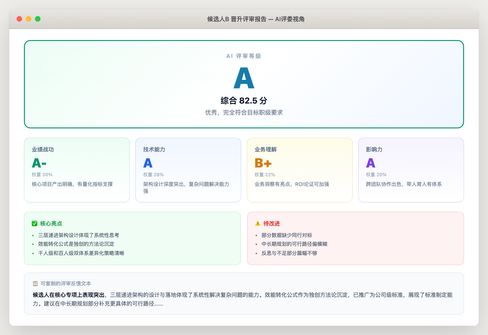
我做的事：通读报告、调整两三个我认为评分偏高或偏低的地方、补充一些AI没有行业背景无法判断的点。每份材料的确认和调整大约5分钟。
8份材料：AI生成 8分钟 + 我确认调整 40分钟 = 约50分钟。
3.2 横向排序：不是打完分就完了
评完单份材料只是第一步。更难的是横向对比——同一职级的几个人，谁更强？
我让AI在总分的基础上引入了3个校准因子：
| 校准因子 | 说明 | 效果 |
|---|---|---|
| 能力密度 | 项目复杂度 × 个人贡献度 | 避免"大项目躺赢" |
| AI赛道加分 | 今年新增的AI能力要求 | 体现新趋势 |
| 独立攻坚度 | 是否独当一面解决难题 | 区分"跟着做"和"自己做" |
校准后的排序和我作为评委的直觉判断完全吻合——这很重要。
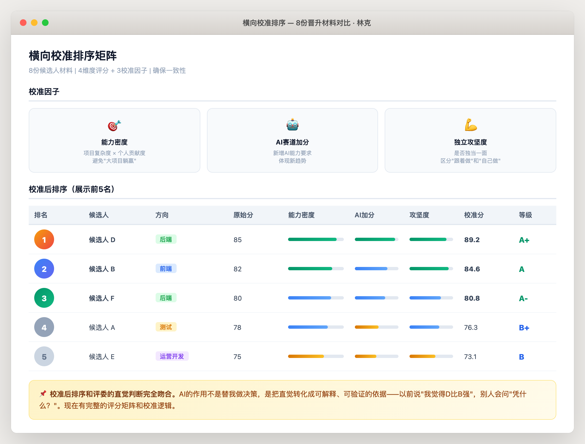
3.3 评审效率对比
| 维度 | 传统方式 | AI辅助方式 |
|---|---|---|
| 时间 | 5+ 小时 | 不到1小时 |
| 覆盖度 | 容易遗漏某些维度 | 系统覆盖7个评审维度 |
| 一致性 | 看到第6份的时候标准已经漂移了 | 每份材料用同一套标准 |
| 可追溯 | "我觉得他差点意思" | 完整评分矩阵+校准逻辑 |
| 复用性 | 明年重新来 | 职级标准库+评审模型永久沉淀 |
04 两条线背后的秘密：共享的底层能力
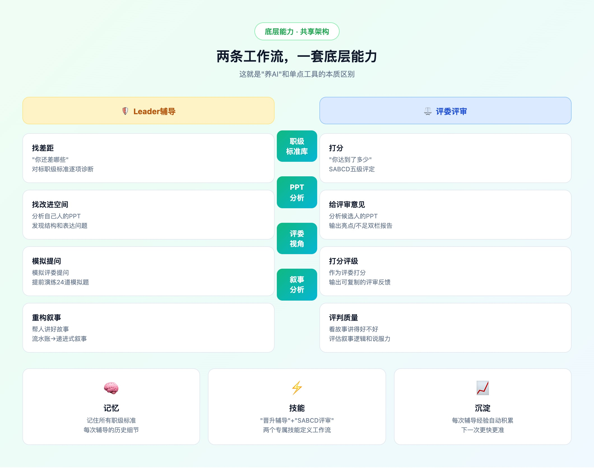
辅导一条线，评审一条线——看起来是两件独立的事。但它们共享同一套底层能力。
| 底层能力 | 辅导时怎么用 | 评审时怎么用 |
|---|---|---|
| 职级标准库 | 找差距——"你还差哪些" | 打分——"你达到了多少" |
| PPT分析 | 分析自己人的PPT，找改进空间 | 分析候选人的PPT，给评审意见 |
| 评委视角 | 模拟评委提问，提前演练 | 作为评委打分，输出评审报告 |
| 叙事分析 | 帮人重构叙事，讲好故事 | 评判叙事质量，看故事讲得好不好 |
ChatGPT能帮你润色一段文字，但它没法从头到尾辅导一个人晋升——因为它不知道你公司的职级标准、不了解评委关注什么、不记得上次辅导的细节。
我的AI做到了，靠的是3件事：
1. 记忆 —— 记住了所有技术通道的职级标准、每次辅导的历史细节
2. 技能 —— "晋升辅导"和"SABCD评审"两个专属技能，定义了完整的工作流
3. 沉淀 —— 每次辅导的经验会自动积累，下一次辅导更快更准
05 踩坑提醒
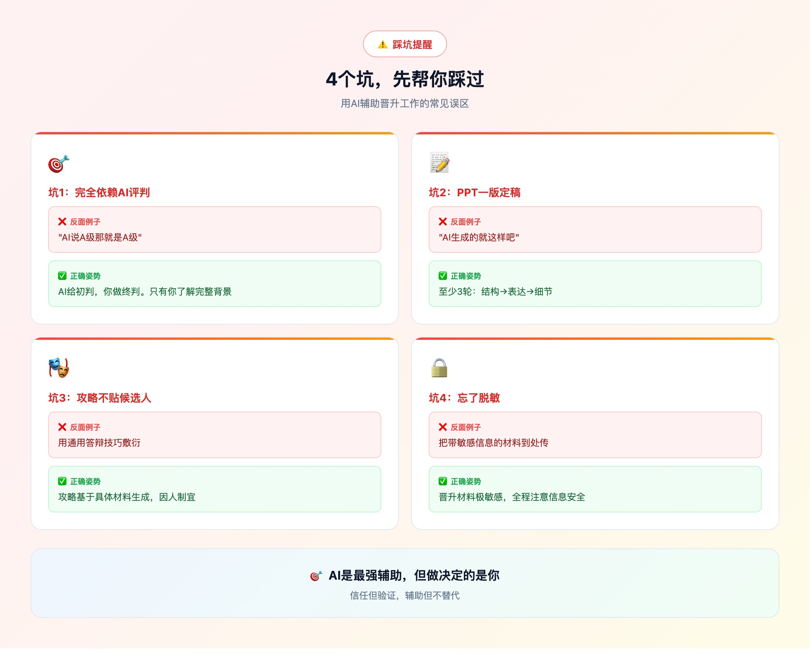
| 坑 | 反面例子 | 正确姿势 |
|---|---|---|
| 完全依赖AI评判 | "AI说A级那就是A级" | AI给初判，你做终判。只有你了解候选人的完整背景 |
| PPT一版定稿 | "AI生成的就这样吧" | 至少3轮迭代。第一版解决结构，第二版优化表达，第三版打磨细节 |
| 攻略不贴候选人 | 用通用答辩技巧敷衍 | 攻略要基于具体材料生成，每个人的重点和弱点不同 |
| 忘了脱敏 | 把带敏感信息的材料到处传 | 晋升材料极其敏感，全程注意信息安全 |
06 总结与下期预告
AI不只是帮你做某一件事。它能跟着你，走完一整个工作流。
从辅导到评审，从诊断到排序——同一个AI，贯穿全程。
这就是"养AI"和"用AI"的根本区别：
- 用AI = 每次问一个问题，得到一个回答
- 养AI = 它理解你的整个工作场景，在每个环节都能帮上忙
这个晋升季，AI帮我生成的文件超过20个：结构化材料、多版本PPT、答辩攻略、模拟问答、评审报告、排序矩阵……
下一期，更疯狂——
它每天早上6点自己醒来，自动帮你追踪整个行业在发生什么。
不用你说"帮我看看今天有什么新闻"。不用你说"帮我整理一下"。
它自己搜、自己读、自己整理、自己推送给你。
敬请期待：养了个AI · 第5期｜实战：每天6点，它自动帮我追踪行业动态
07 彩蛋
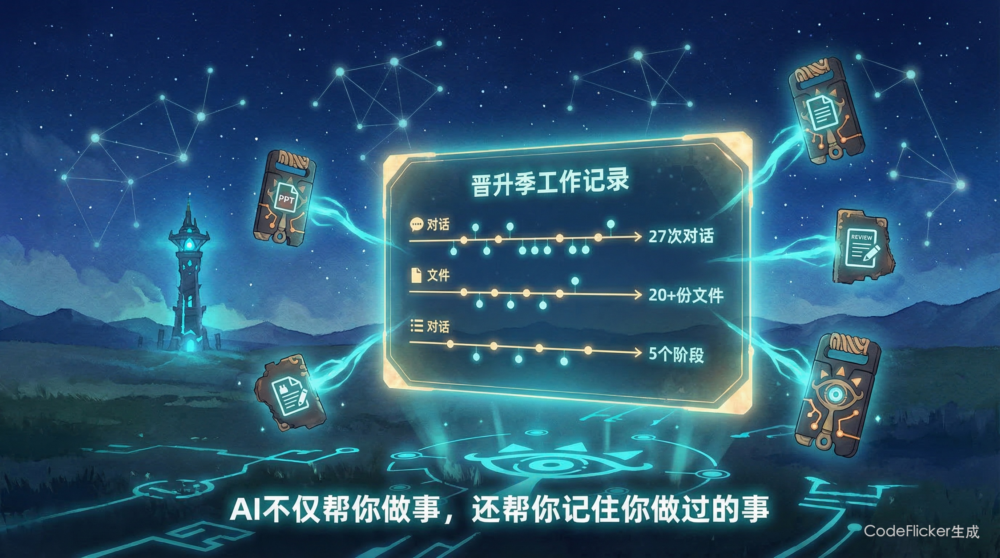
你猜这篇文章里的实战数据从哪来的？
答案是：我让AI帮我回顾了整个晋升季的工作记录。
它翻出了所有的对话历史、生成的文件、工作流程——比我自己的记忆还详细。
最好的笔记工具不是你写得最快的那个，是替你记的那个。